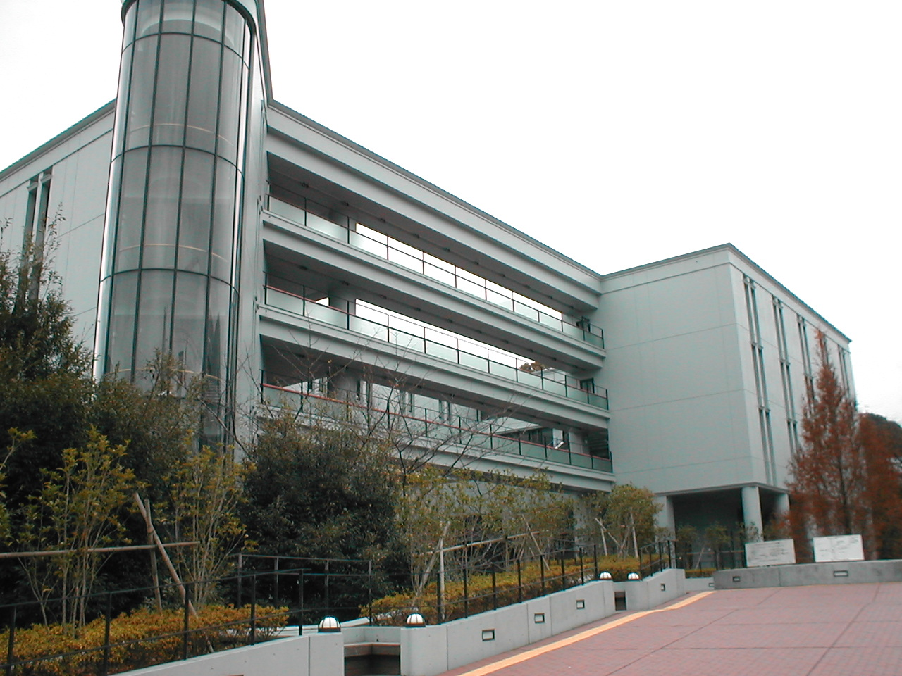
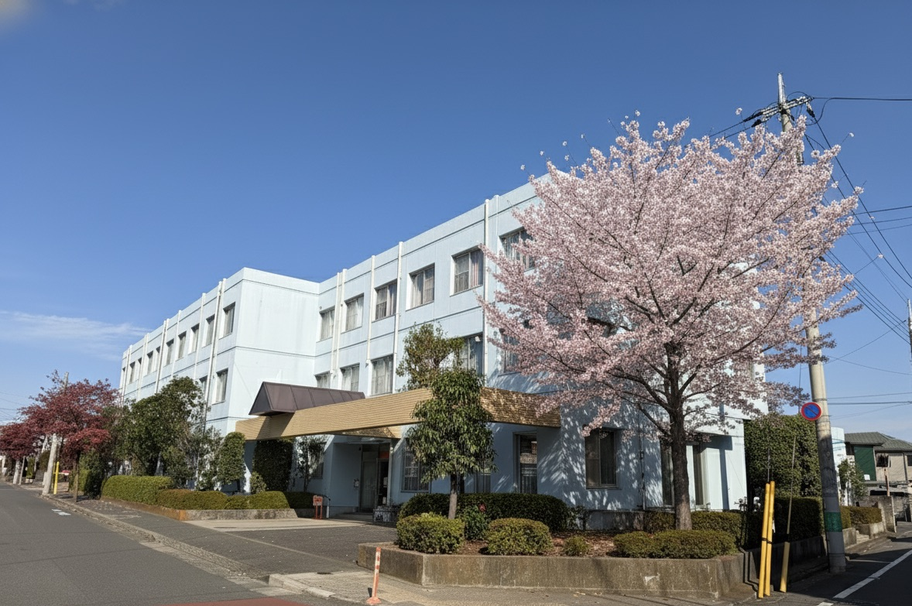
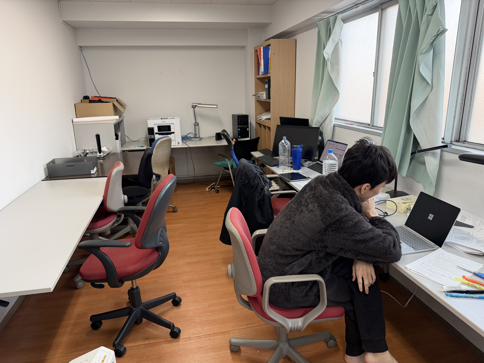

🌸中央大学に進学する富山県出身者のための男子学生寮
青雲寮（せいうんりょう）は、東京都府中市にある富山県出身の男子大学生専用の学生寮です。月額約5.1万円（居住費3万円＋食費1.6万円＋負担金0.5万円）という破格の料金で、食事付き、個室完備、セキュリティも万全な環境で、安心して大学生活を送ることができます。
多摩キャンパスの坂や通学時間、後楽園キャンパスの都心家賃が気になる方へ。青雲寮なら多摩モノレール経由で多摩キャンパスにもアクセスしやすく、費用も抑えられます。
入寮時特待生制度について
富山県学生寮では、新入寮生を対象とした「入寮時特待生制度」を実施いたします。選考により特待生に認定された方には、入寮費（5万円）と1年目の寮費半額（18万円）の合計23万円が免除（返金）されます。
詳細は入寮生の募集についてをご覧ください。
🏠 格安の寮費
月額約5.1万円（居住費3万円＋食費1.6万円＋負担金0.5万円）。東京の一人暮らしと比べて圧倒的にお得！
🍱 栄養満点の食事
朝夕2食付き。栄養バランスの取れた温かい食事を提供
🔒 安心のセキュリティ
24時間管理体制で、初めての東京生活も安心
🚃 好立地
府中市の閑静な住宅街。都内主要大学へアクセス良好
✨中央大学の通学アクセスと家賃比較で選ばれる理由


🚇 通学時間・アクセス
多摩キャンパスへ約40〜55分、後楽園キャンパスへ約60〜75分。授業や実験に合わせて通学しやすい距離感です。
💰 固定費の圧縮
多摩・文京区の家賃相場より低い固定費で、教科書・資格費用に充てられます。
🤝 同郷コミュニティ
富山県出身の先輩・同期が履修や就活、生活情報を共有します。上京後も安心して相談できます。
📚 学習環境
個室・Wi-Fi・学習室完備。朝夕2食付きで、課題や制作、研究に集中できます。
🚇通学アクセス詳細
多摩キャンパス
ルート: 東府中 → 高幡不動（京王線）→ 中央大学・明星大学駅（多摩モノレール）
所要時間: 約40〜55分
特徴: 乗換1回でキャンパス直結。雨天時も移動しやすいルートです。
後楽園キャンパス
ルート: 東府中 → 新宿（京王線）→ 御茶ノ水（中央線）→ 後楽園（丸ノ内線）
所要時間: 約60〜75分
特徴: 授業時間に合わせて新宿乗換を調整しやすい経路です。
💴費用比較（一人暮らし vs 青雲寮）
多摩・後楽園周辺での一人暮らしと寮生活の月額イメージ比較です。
一人暮らし
（個室）
※ 多摩・後楽園周辺のワンルーム相場（管理費込）との比較例
| 項目 | 一人暮らし（目安） | 青雲寮（特待生） | 備考 |
|---|---|---|---|
| 家賃（月額） | 70,000円〜 | 15,000円 | 個室・家具付き |
| 食費（月額） | 30,000円〜 | 23,000円 | 朝夕2食付き（日曜祝日除く） |
| 光熱水費 | 10,000円〜 | 寮費に含む | |
| 通信費 | 5,000円〜 | 寮費に含む | Wi-Fi完備 |
| 月額合計 | 115,000円〜 | 36,000円 | 毎月約7万円の差 |
📖寮生活のイメージ


タイムスケジュール例
- 06:50 起床・朝食
- 07:40 通学（多摩モノレール経由で多摩キャンパスへ）
- 09:00 授業・演習
- 12:00 昼食
- 13:00 ゼミ・実験・制作
- 18:30 帰寮・夕食
- 20:00 自室や学習室で課題・作品・資格勉強
- 23:30 就寝
在寮生の声
「坂の多い多摩キャンパスでも、体力を温存しつつ勉強に集中できています。固定費が安定するのが一番ありがたいです。」
🧭中央大学の寮・一人暮らしを考える保護者・受験生・高校生へ
中央大学の住まい選びで注意すべきは、多摩・後楽園・市ヶ谷田町・茗荷谷・駿河台など学部ごとにキャンパス拠点が異なる点です。特に2023年度以降、法学部が茗荷谷キャンパスへ移転するなど変更が続いており、最新情報の確認が不可欠です。青雲寮からは多摩モノレール経由で多摩キャンパスへ直結アクセスでき、都心の各キャンパスへも1時間前後で通学できます。
キャンパス情報や大学寮制度は更新があるため、大学公式サイトもあわせて確認してください。
保護者が確認したい点
中央大学は学部ごとにキャンパスが分散しているため、どの学部に進学するかによって住まい戦略が変わります。青雲寮は多摩モノレールで多摩キャンパスへ直結でき、後楽園・茗荷谷へも1時間前後でアクセス可能です。月額5.1万円（食費・光熱費込み）という安定した費用は、保護者の家計管理にも大きなメリットがあります。
受験生が比較したい点
中央大学公式寮は定員に制限があります。青雲寮は富山県出身者向けに安定した入居機会を提供しており、合格後すぐに申込できます。多摩・後楽園・茗荷谷のどのキャンパスに通うことになっても、青雲寮から対応できる点が強みです。
高校生が先に知りたい点
中央大学は多摩キャンパスが有名ですが、法学部は茗荷谷、理工・国際情報は後楽園と都心のキャンパスも多くあります。受験段階でどのキャンパスに通うかを把握しておくと、住まい選びの判断がスムーズになります。入学時期の住まい確保には早めの準備が重要です。
❓よくある質問
Q. 通学時間はどのくらいですか？
A. 多摩キャンパスは約40〜55分（高幡不動乗換・多摩モノレール経由で直結）、後楽園キャンパスは約60〜75分、茗荷谷キャンパスは約65〜80分が目安です。
Q. 家賃差はどのくらいありますか？
A. 都心のワンルーム家賃7〜9万円圏に対し、寮費＋食費込みで毎月約7万円の差が出るケースが多いです。4年間では280〜300万円以上の差になります。
Q. 食事や光熱費は含まれますか？
A. 朝夕2食（日曜・祝日除く）、光熱費、Wi-Fiが寮費に含まれます（詳細は募集要項をご確認ください）。
Q. 中央大学の公式寮との違いは何ですか？
A. 中央大学公式寮は定員や入居資格に制限があります。青雲寮は富山県出身者専用で4年間継続して入居でき、月額費用が明確です。最新情報は大学公式サイトでご確認ください。
Q. 多摩モノレールでの通学は便利ですか？
A. 東府中から高幡不動で多摩モノレールに乗り換え、中央大学・明星大学駅で直結します。雨の日も濡れずにキャンパスへ入れるのが便利で、朝の混雑も他の路線に比べて比較的穏やかです。
Q. サークル・アルバイトと両立できますか？
A. 平日夜のサークルや土日のアルバイトも可能です。多摩キャンパスは郊外のため活動が大学内に集中しており、帰宅も比較的規則的になりやすい環境です。
Q. 入寮時特待生制度とは何ですか？
A. 選考により特待生に認定された新入寮生には、入寮費5万円と1年目の寮費半額18万円の合計23万円が免除（返金）されます。詳細は入寮生募集ページをご覧ください。
富山県出身で中央大学を目指す皆さんへ
費用と学修時間を確保しやすい青雲寮をぜひご検討ください。
見学も随時受け付けています。